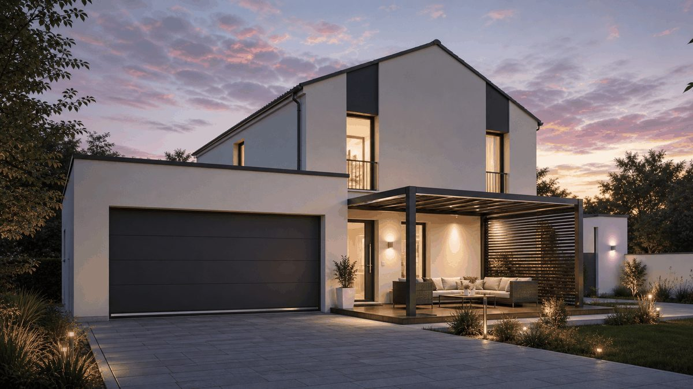
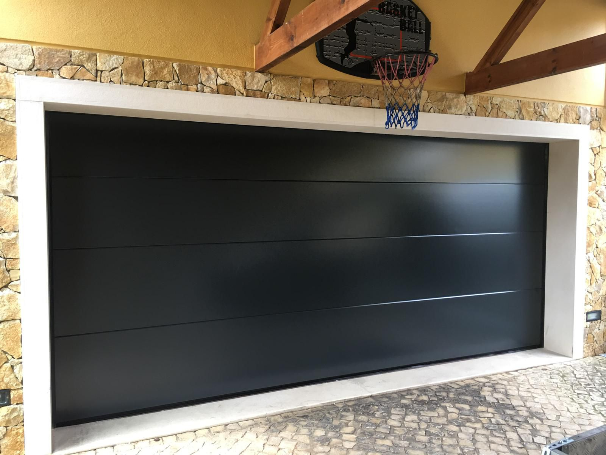
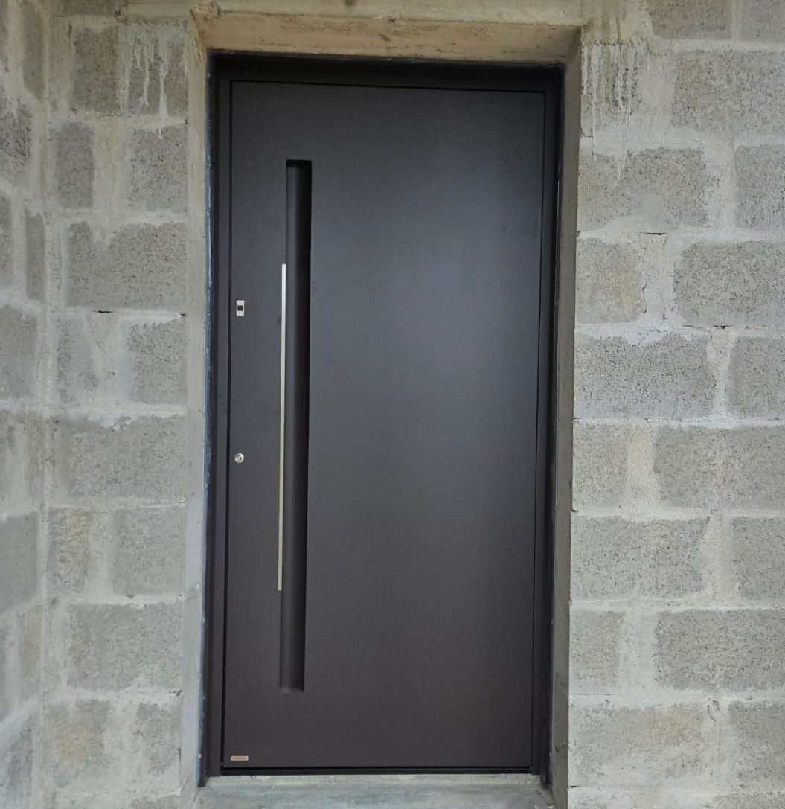
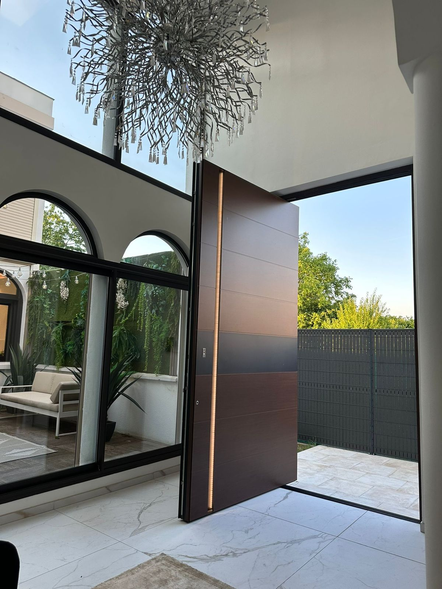
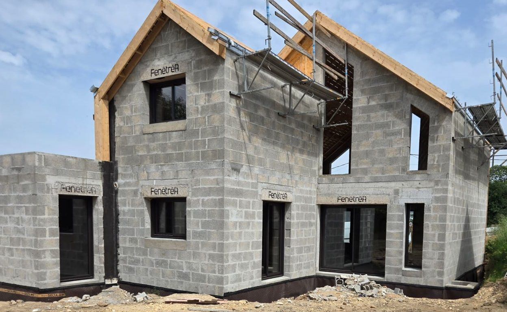
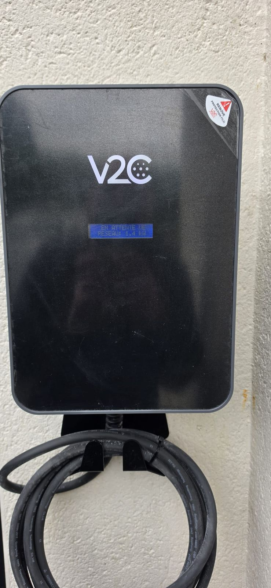
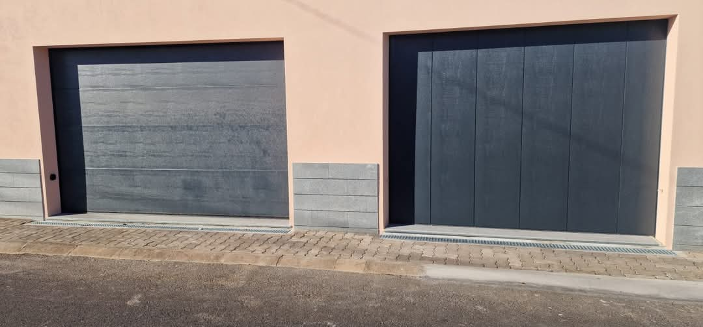
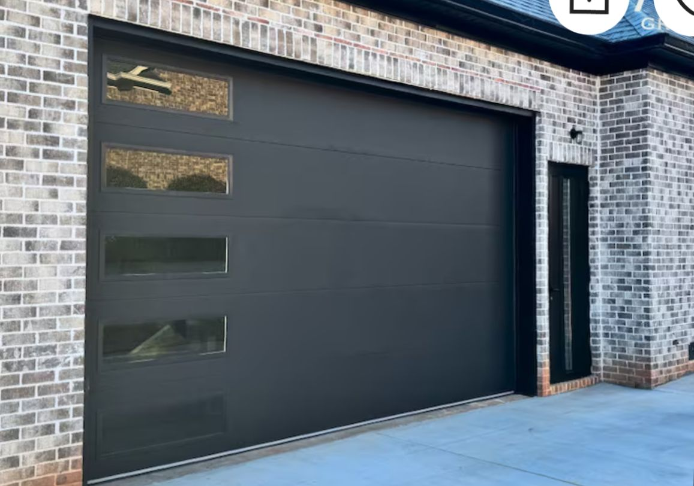
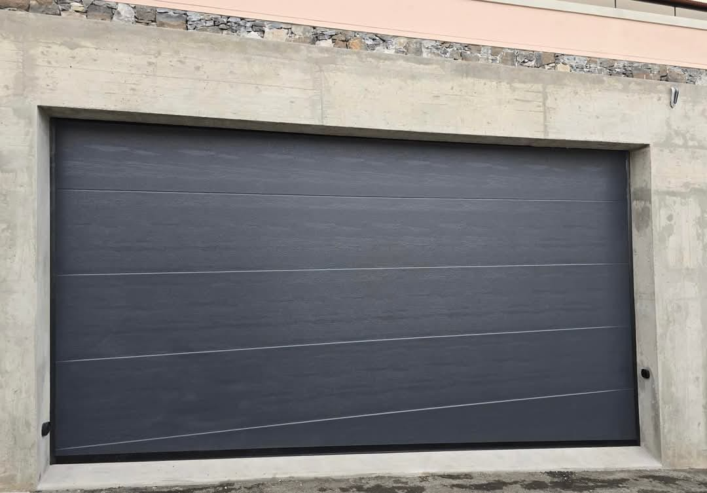
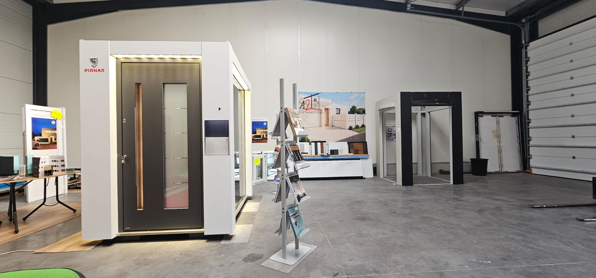

Sectionnelle Hörmann · gris anthracite · sur mesureLa porte qui ouvre votre maison.
Portes de garage, portes d’entrée, portes pivot et fenêtres sur mesure. Composez-les en 3D, voyez le prix TTC tout de suite, et venez toucher les matières au showroom de Cléguer, à 15 minutes de Lorient.
Tout se prépare en ligne,
tout se décide avec nous.
Configurateurs 3D
Sectionnelles, latérales, enroulables, basculantes, portes d’entrée et pivot : vos cotes, vos couleurs, la porte qui s’ouvre à l’écran.
ConfigurerRelever ses cotes
La fiche de prise de cotes pour votre porte de garage : six mesures, contrôlées en direct, imprimables.
Prendre mes mesuresSolutions & tarifs
Les prix réels, gamme par gamme : portes d’entrée, portes de garage, bornes, panneaux muraux. Pas de « prix sur demande ».
Voir les prixLe Coin info
Mesurer une fenêtre selon la pose (applique, tunnel, rénovation), régler une porte, entretenir un moteur : schémas cotés et vues 3D A2T.
ApprendreVoyez votre porte s’ouvrir avant de la commander.
- Vos cotes, vos couleursLa 3D reprend exactement la porte que vous composez.
- Faites-la tourner du doigtDehors comme dedans : poignées, paumelles, rails et moteur à leur place.
- Portes et fenêtresPortes d’entrée et de garage, et maintenant nos fenêtres aluminium : ouvrez-les, basculez l’oscillo, descendez le volet.
Tout ce qui ouvre et ferme votre maison.

Portes de garage
Sectionnelles, latérales, enroulables, basculantesdès 866 € TTC
Portes d’entrée
Aluminium, bois, bois-alu, acierdès 2 931 € TTC
Portes pivot
Grandes dimensions, marbre, céramiquesur mesure
Fenêtres & baies
PVC, aluminium, coulissants, fixessur mesure
Bornes de recharge
Maison, entreprise, copropriétédès 778 € TTC
Panneaux muraux
Bambou, marbre, pierre flexibledès 120 € TTCChez vos voisins, autour de Lorient.



Le Pays de Lorient, et toute la Bretagne.
Ce que disent nos clients.
« Alors c'est simple, n'hésitez même pas un instant. Ses portes sont superbes et son suivi est d'un professionnalisme incroyable. »
« Très réactif, sérieux. Je ne peux que recommander cette entreprise, en particulier Thierry. Je suis ravi d'être passé par vous pour ma porte de garage. »
« Un grand merci à Thierry pour son professionnalisme et la qualité de son travail. Les fenêtres sont impeccables. Thierry est à l'écoute et de très bon conseil. »
« À l'écoute, du sérieux et du professionnalisme. Qualité/prix plus que correct. Merci Thierry et Andreea. »
« Le vendeur est très gentil et prend le temps d'expliquer chaque étape de la commande avec patience et professionnalisme. »
« Entreprise sérieuse ! Mr Dongus est un conseiller hors pair. Nos menuiseries en aluminium et notre porte d'entrée sont superbes. »
« Alors c'est simple, n'hésitez même pas un instant. Ses portes sont superbes et son suivi est d'un professionnalisme incroyable. »
« Très réactif, sérieux. Je ne peux que recommander cette entreprise, en particulier Thierry. Je suis ravi d'être passé par vous pour ma porte de garage. »
« Un grand merci à Thierry pour son professionnalisme et la qualité de son travail. Les fenêtres sont impeccables. Thierry est à l'écoute et de très bon conseil. »
« À l'écoute, du sérieux et du professionnalisme. Qualité/prix plus que correct. Merci Thierry et Andreea. »
« Le vendeur est très gentil et prend le temps d'expliquer chaque étape de la commande avec patience et professionnalisme. »
« Entreprise sérieuse ! Mr Dongus est un conseiller hors pair. Nos menuiseries en aluminium et notre porte d'entrée sont superbes. »
« Une équipe géniale à l'écoute du client. Des produits de très bonne qualité et un prix totalement correct. »
« Portail Hörmann acheté en début d'année, fonctionne très bien. Vendeur de très bon conseil et très professionnel. »
« Entreprise très sérieuse, accompagnement très efficace et réactivité au rendez-vous. Porte à pivot de grande qualité. »
« Professionnel et sérieux. Il m'a appelé et mis en confiance. Il répond immédiatement aux messages et appels. »
« Je recommande A2T Distributions ! Très bon service et très réactif. Problème résolu rapidement. »
« Super accueil et conseils, les délais de livraison et les tarifs très corrects. »
« Une équipe géniale à l'écoute du client. Des produits de très bonne qualité et un prix totalement correct. »
« Portail Hörmann acheté en début d'année, fonctionne très bien. Vendeur de très bon conseil et très professionnel. »
« Entreprise très sérieuse, accompagnement très efficace et réactivité au rendez-vous. Porte à pivot de grande qualité. »
« Professionnel et sérieux. Il m'a appelé et mis en confiance. Il répond immédiatement aux messages et appels. »
« Je recommande A2T Distributions ! Très bon service et très réactif. Problème résolu rapidement. »
« Super accueil et conseils, les délais de livraison et les tarifs très corrects. »
